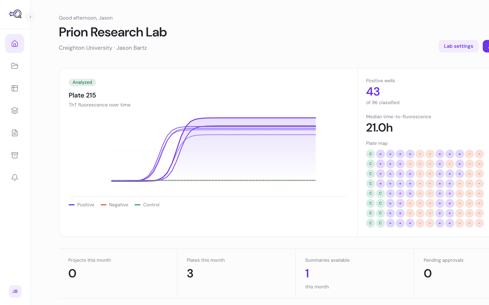

01
QuicLens
Cloud-native lab analytics platform
A multi-tenant research analytics platform designed for neurodegenerative disease and prion research labs. QuicLens helps researchers analyze experimental data, review fluorescence kinetics, classify plate maps, evaluate dose-response results, and maintain audit-ready records in a cleaner, more structured workflow.
This project is intentionally not an ELN or research notebook. It is focused on analysis, interpretation, and decision-ready outputs for labs working with complex experimental data.
Case study ↗
Code private — Available on request